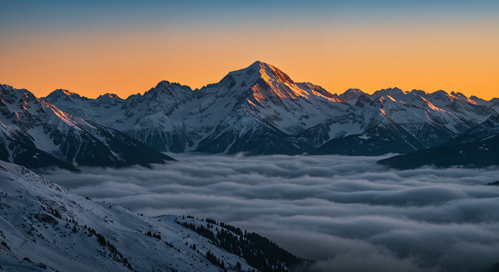

Titouan
Moreno-Brun

Salut moi c'est Titouan, étudiant en communication et développeur web freelance basé à Annecy Je recherche un stage en communication du 10 mai au 2 juillet 2027
J'ai un faible pour la pub, la vidéo et les sites qui ont du caractère. Le reste du temps, je suis sur un parquet ou sur un sentier de trail. Fun fact, je joue aussi de la batterie
Projets Sélectionnés
Cinq étapes de mon carnet de route. Cliquez sur une étape pour ouvrir sa fiche : contexte, rôle, résultat.
(02) Parcours
Ce qu'il y a déjà
dans mon sac.
Pub, vidéo, web : en agence, en freelance ou au BDE, j'ai déjà mis les mains dans les trois. Voici les étapes qui comptent.
-
Depuis juin 2026
Développeur web & designer freelance
Micro-entreprise · Annecy & environs
- Sites vitrines sur mesure pour des commerces annéciens
- Prospection : repérage, maquettes de démo, visites en boutique
- Devis, hébergement et suivi client, de A à Z
-
Depuis 2026
Vidéaste & CM TikTok
Be com Pro · Agence junior de l'IUT de Besançon
- Tournage et montage de contenus pour l'agence et ses clients
- Gestion du compte TikTok : formats, tournage, publication
-
Février 2026
Stage en agence de publicité
Agence Signature · Annecy
- Stratégie digitale et TikTok
- Contribution à des plans média d'échelle nationale
- Rédaction web, prospection, gestion de projet événementiel
-
2025 — 2026
Chef opérateur
Tournages
- Interview de Basma Sellak, programme Stars EU, avril 2026
- Court métrage « Incandescent », BFBG, mai 2025
-
2026 — 2027
Commercial au BDE
Krtel Info Com · IUT de Besançon
- Partenariats avec les bars de Besançon pour les soirées étudiantes
- Recherche et négociation de sponsors : Revolut, Red Bull